Double click display_server_pi.exe (display_server.exe if using the old Windows only version) in the folder bin.
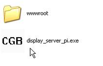
When running the browser on windows for the first time, there might be a dialog that pops up asking for blocking the program. You need to give the permission (click the "Unblock" button) in order for the browser to function properly.
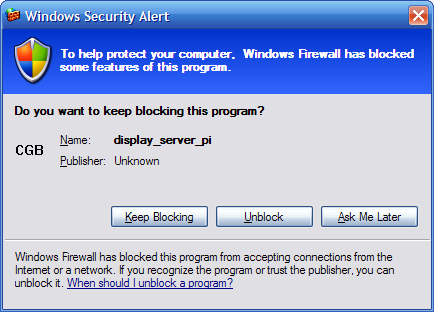
You will see a icon appears in the system tray area. Right click it and choose "Browse" (double click the icon will do the same) will open a web browser window which gives you the starting page of the CisGenome Browser. You can then create new sessions or load old sessions, according to the manual.
Another way to open the starting page of the CisGenome Browser is to open a web browser and type in the address: "http://127.0.0.1:11111/" (use port 32123 if you are using the old Windows only version).
1. Make display_server_pi executable using command "chmod +x display_server_pi";
2. Edit the first line of run.sh. Change "/Users/wonglab/workspace/browser/bin" to the path on your computer that display_server_pi lies in;
3. Make run.sh executable using command "chmod +x run.sh";
4. Double click or execute run.sh in a console.
5. Open a web browser and type in the address: "http://127.0.0.1:11111/".
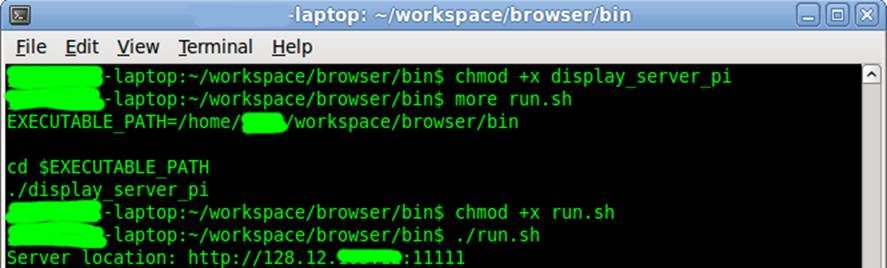
1. Make display_server_pi executable using command "chmod +x display_server_pi";
2. Edit the first line of run.command. Change "/Users/wonglab/workspace/browser/bin" to the path on your computer that display_server_pi lies in;
3. Make run.command executable using command "chmod +x run.command";
4. Double click or execute run.command in a console.
5. Open a web browser and type in the address: "http://127.0.0.1:11111/".
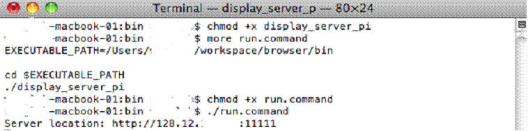1. Download http://prdownloads.sourceforge.net/wxwindows/wxMSW-2.8.10.zip
2. Unzip the package to a certain folder.
3. Open wxMSW-2.8.10\build\msw\wx.dsw using Microsoft Visual Studio, and build the whole project. For customized build or more detailed instructions, please refer to wxMSW-2.8.10\INSTALL-MSW.txt for more details. After this step, you should see the resulting .lib files in the folder wxMSW-2.8.10\lib\vc_lib.
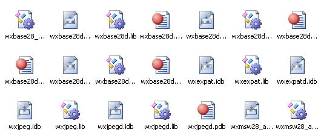
4. Download http://www.boostpro.com/download/boost_1_39_setup.exe
5. Double click and install the boost package. Select Multithread, static runtime when asked about variants of the library.
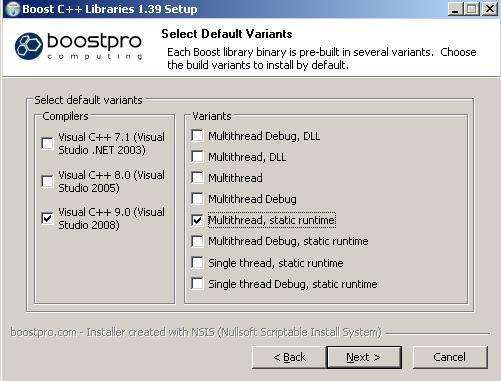
6. Download zlib for windows from http://gnuwin32.sourceforge.net/downlinks/zlib-lib-zip.php and extract somewhere. (Required by BAMTools)
7. Open mswin/CisGenomeBrowser.sln using Visual Studio 2008 or above.
8. Set the Visual Studio environment variables
8.1. Open Tools->Options->Projects and Solutions->VC++ Directories, in the menu Show directories for, select Include files, add (wxWidgets install location)\wxMSW-2.8.10\include, (wxWidgets install location)\wxMSW-2.8.10\lib\vc_lib\msw\,(zlib location)\zlib-1.2.3-lib\include\ and (Boost install location)\boost_1_39_0\ to the list.
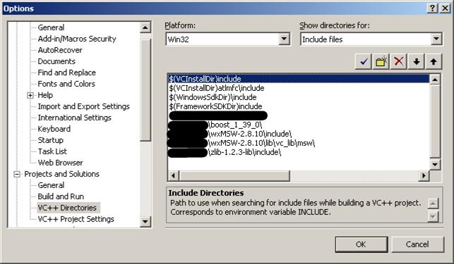
8.2. In the same dialog, select Library files, add (wxWidgets install location)\wxMSW-2.8.10\lib\vc_lib, (zlib location)\zlib-1.2.3-lib\lib, and (Boost install location)\boost_1_39_0\lib to the list.
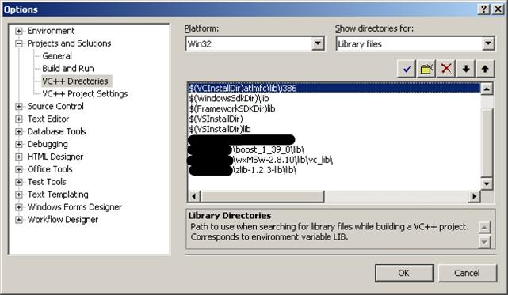
9. Build the CisGenom_cfiles project.
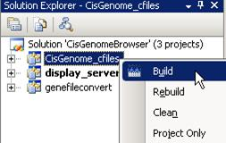
10. Build the display_server_pi project.
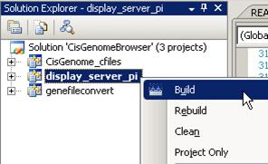
1. Install GTK
Type sudo aptitude install gnome-core-devel build-essential in the console
2. Install wxGTK:
2.1. Download from: http://prdownloads.sourceforge.net/wxwindows/wxGTK-2.6.4.tar.gz
2.2. Run the following sequentially in shell:
gunzip -c wxGTK-2.8.10.tar.gz | tar xopf -
mkdir buildgtk
cd buildgtk
make clean
../configure --with-gtk --disable-shared
make
sudo make installp
ldconfig
3. Install boost library
3.1 Download http://sourceforge.net/project/showfiles.php?group_id=7586&package_id=8041
3.2 In the directory where you want to put the Boost installation, execute
tar --bzip2 -xf /path/to/boost_1_42_0.tar.bz2
3.3 Issue the following commands in the shell (don't type $; that represents the shell's prompt):
$ cd path/to/boost_1_42_0
$ ./bootstrap.sh --help
3.4 Select your configuration options and invoke ./bootstrap.sh again without the --help option. Unless you have write permission in your system's /usr/local/ directory, you'll probably want to at least use $ ./bootstrap.sh --prefix=path/to/installation/prefix to install somewhere else. Also, consider using the --show-libraries and --with-library_name options to limit the long wait you'll experience if you build everything.
3.5 Finally, execute
$ ./bjam install
will leave Boost binaries in the lib/ subdirectory of your installation prefix. You will also find a copy of the Boost headers in the include/ subdirectory of the installation prefix, so you can henceforth use that directory as an #include path in place of the Boost root directory.
3.6 See http://www.boost.org/doc/libs/1_42_0/more/getting_started/unix-variants.html for more details.
4. Import the project in cisgenome_cfiles into Eclipse to build the static library libcisgenome_lib.a
4.1 Right click on the Project Explorer pane, click Import.
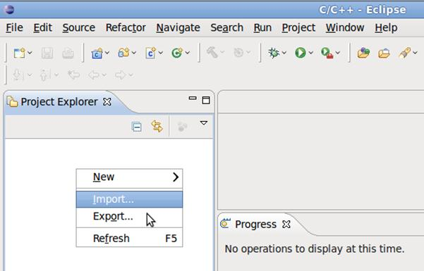
4.2 Select General -> Existing Projects into Workspace
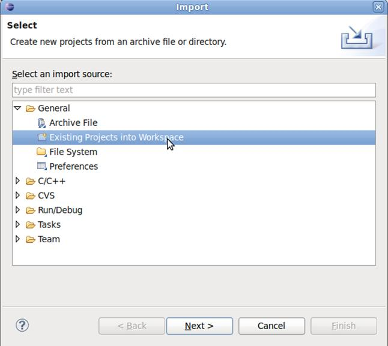
4.3 Click on Browse, select the folder cisgenome_cfiles. Click Finish to finish import.
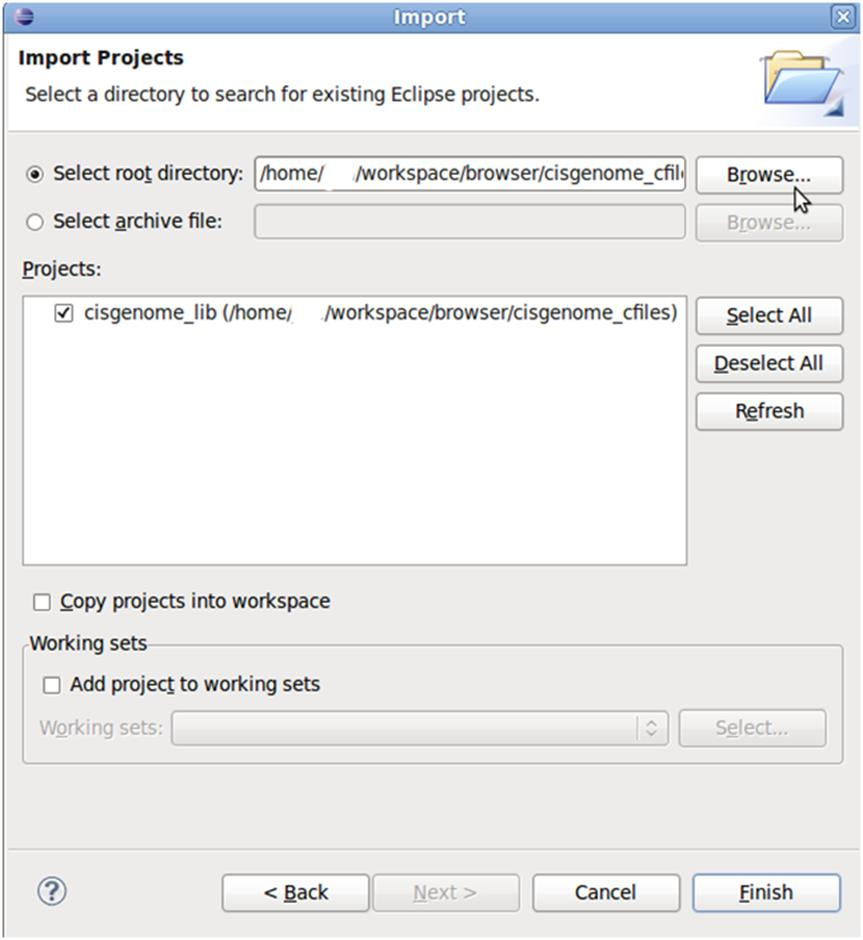
4.4 Right click on cis_genome_lib and click on Build Project to build the project.
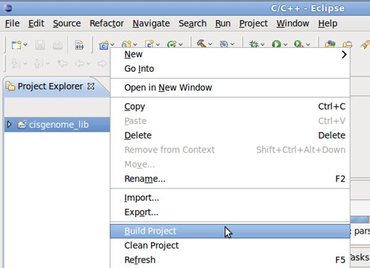
5. Follow the similar procedure in 4 with the only difference that in step 4.3, chose the folder display_server_pi, Import the project display_server_pi into Eclipse, and build the display_server_pi application.
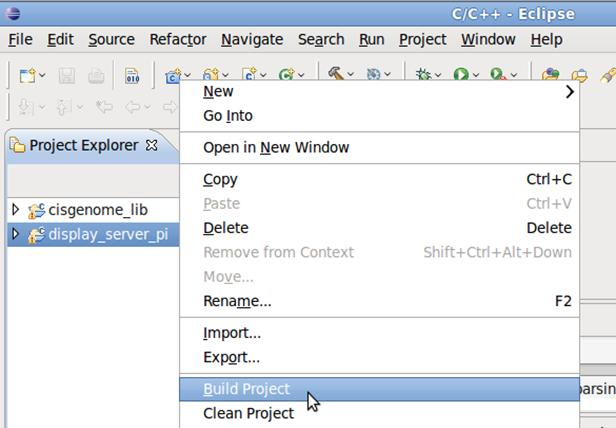
1. Install wxMac:
1.1. Download from: http://prdownloads.sourceforge.net/wxwindows/wxMac-2.8.10.tar.gz1.2. Run the following sequentially in shell:
gunzip -c wxMac-2.8.10.tar.gz | tar xopf -
mkdir osx-build
cd osx-build
arch_flags="-arch i386"
../configure CFLAGS="$arch_flags" CXXFLAGS="$arch_flags" LDFLAGS="$arch_flags" OBJCFLAGS="$arch_flags" OBJCXXFLAGS="$arch_flags" --disable-shared --disable-unicode
make
sudo make install
2. Do step 3, 4, 5 as in the case for Linux.